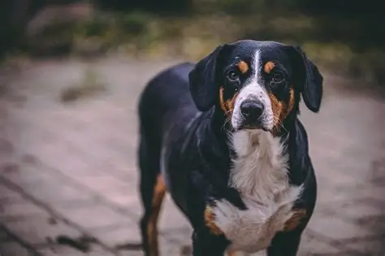
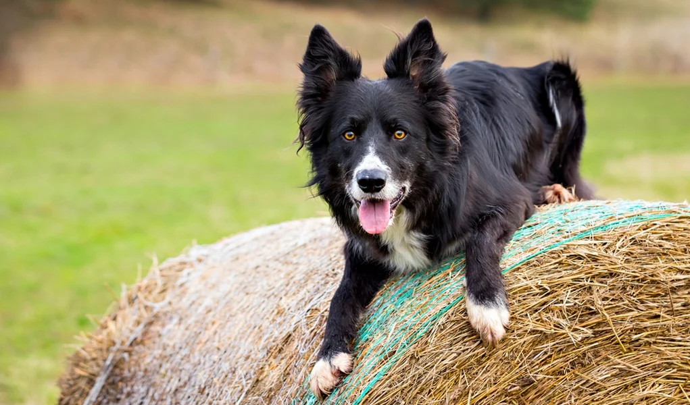
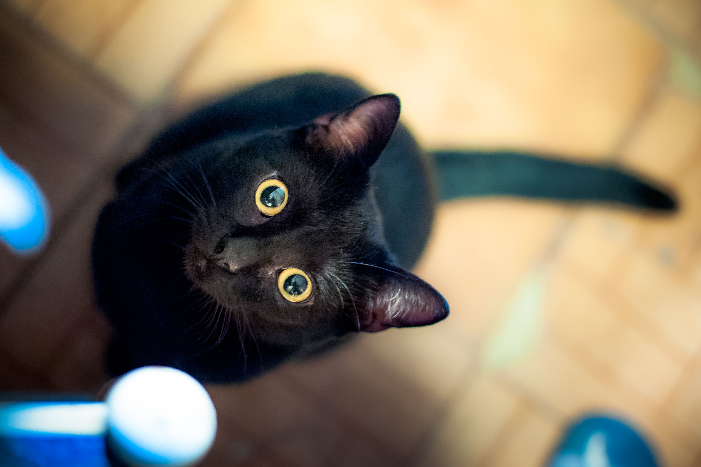
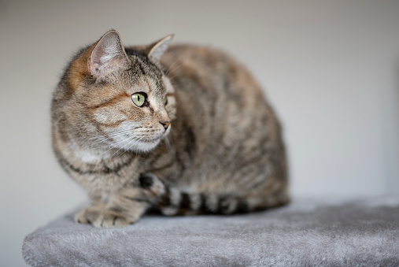
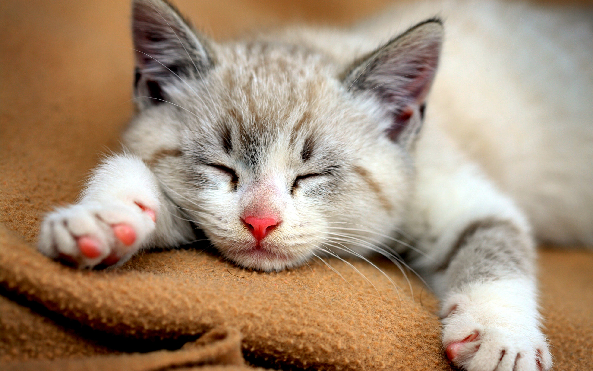
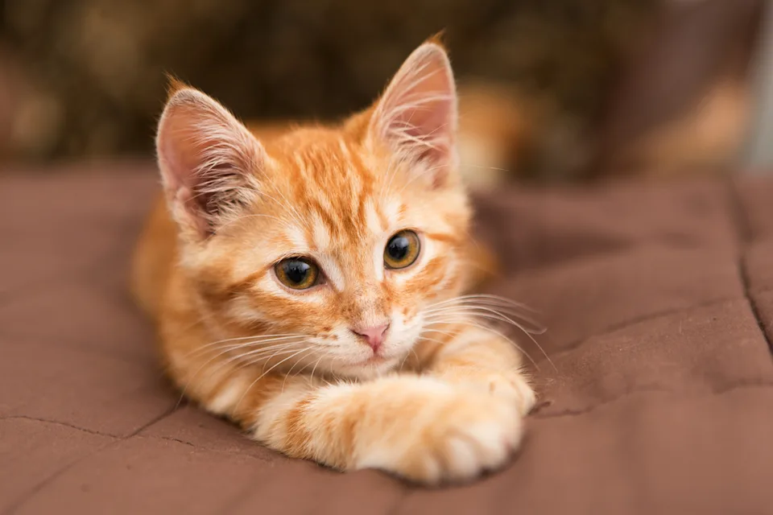
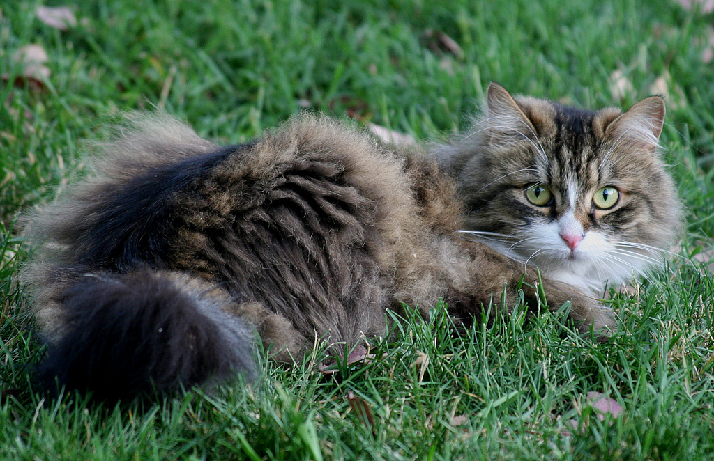

Jenny
Jenny is a 5 year old Austrailian Shepard. She loves to go on walks and loves to play. Her favorite toys are ropes and anything to play tug of war with. She will fill your hearts everyday with love and joy!
Are you looking for a fun, cute, playful furball to enter your life? Here are our most recent animals we have taken in to find forever homes.
If you would like to adopt, simply click on any of the animals shown below!
Jenny is a 5 year old Austrailian Shepard. She loves to go on walks and loves to play. Her favorite toys are ropes and anything to play tug of war with. She will fill your hearts everyday with love and joy!

Prince is a 6 month old Labrador Retriever puppy who is looking for a loving family to adopt him! He loves to play and has a tendency to sleep all day. He will bring love and joy to his forever family!

George is an 8 year old English Bulldog. He is best known for his sassy attitude and his need for always wanting treats. His favorite hobby is sleeping 10 hours a day. Show him his forever home.

Jane is an Entlebucher Mountain Dog. She is 6 years old. She loves to roam around and play with frineds, she will make a good edition to a family that loves the outdoors! She will accompany you wherever you go and bring joy to your life. Adopt her into your family. She will be forever greatful for a new home!

Scout and Lucy are a duo, they cannot be separated. Scout is a love bug and Lucy is the sweetest puppy you'll ever They are always playing together and going on adventures, show them their forever home! Click the adopt button below if you would like to adopt them.

Bruce is a 9 year old Border Collie. He is very intelligent and loves to play fetch! He loves to be outside and is always looking for an adventure. He is always in the mood for walks and nap time, he will keep you entertained for hours. Show him your love by adopting him today

Onyx is a black cat around the age of 7. She is very playful and very talkative. She will beg for treats constantly, and she is always sunbathing in a cozy spot on the porch. She is looking for her forever home, adopt her today!

Henry is a domestic tabby cat at an age of 4. He is a quiet, well kept cat. He is best known for stealing snacks out of the fridge, so watch out when you close the door, because you might just lock him in there!

Mittens is a 7 month old tabby kitten. He is very playful and is always sleeping in sunny spots. Give him a cozy blanket and he will love you forever! Adopt him today!

Orange is a 6 month old orange tabby kitten, she is playful and energetic. She is always begging for snacks and will keep you entertained for hours! Adopt her today and show her the forever home she has been looking for.

Sarah is a 3 year old long-haired Siberian Forest Cat. She is very affectionate and loves to cuddle. Her favorite activity is playing with feather toys. She will fill your hearts everyday with love and joy!

Steve is a 4 year old Norwegian Forest Cat. He is very friendly and loves to play with his human. His favorite activity is chasing laser pointers. He will fill your hearts everyday with love and joy!